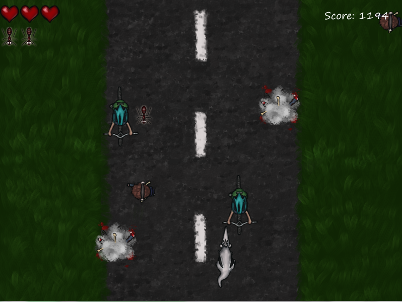

|  |
Contributor(s): Nina Volkmuth, Frederick Rezine, Nick Smith, Matthew Bobke, Kevin Wong
Date: January 2015 Language: C# (made in Unity) Description: Play as Peter the anteater and avoid bicyclists and pedestrians as you make your way around ring road at UCI. Collect 3 ants to regain a life. My Contributions: I did the art and animation and implemented them into the game. I also worked on programming the UI, player death/game over, and bug fixes. This was done for a game jam, and at the start of it, I was the only one with experience with Unity so I helped my team members get familiar with it, too. Download: Click Here Repository: Click Here |